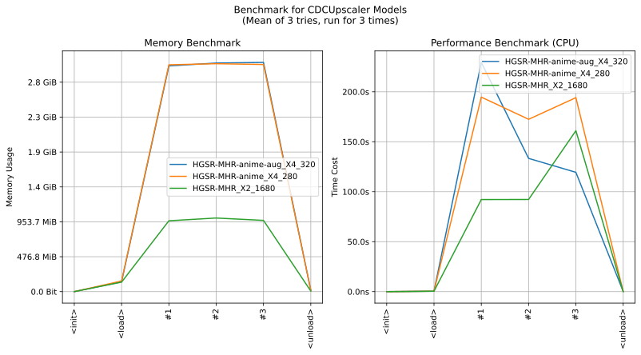

imgutils.upscale.cdc
- Overview:
Upscale images with CDC model, developed and trained by 7eu7d7, the models are hosted on deepghs/cdc_anime_onnx.
Here are some examples:

Here is the benchmark of CDC models:
Note
CDC model has high quality, and really low running speed. As we tested, when it upscales an image with 1024x1024 resolution on 2060 GPU, the time cost is approx 70s/image. So we strongly recommend against running it on CPU. Please run CDC model on environments with GPU for better experience.
upscale_with_cdc
- imgutils.upscale.cdc.upscale_with_cdc(image: str | PathLike | bytes | bytearray | BinaryIO | Image, model: str = 'HGSR-MHR-anime-aug_X4_320', tile_size: int = 512, tile_overlap: int = 64, batch_size: int = 1, silent: bool = False) Image[source]
Upscale the input image using the CDC upscaler model.
- Parameters:
image (ImageTyping) – The input image.
model (str) – The name of the model to use. (default: ‘HGSR-MHR-anime-aug_X4_320’)
tile_size (int) – The size of each tile. (default: 512)
tile_overlap (int) – The overlap between tiles. (default: 64)
batch_size (int) – The batch size. (default: 1)
silent (bool) – Whether to suppress progress messages. (default: False)
- Returns:
The upscaled image.
- Return type:
Image.Image
Note
RGBA images are supported. When you pass an image with transparency channel (e.g. RGBA image), this function will return an RGBA image, otherwise return a RGB image.
- Example::
>>> from PIL import Image >>> from imgutils.upscale import upscale_with_cdc >>> >>> image = Image.open('cute_waifu_aroma.png') >>> image <PIL.PngImagePlugin.PngImageFile image mode=RGBA size=1168x1168 at 0x7F0E8CA06880> >>> >>> upscale_with_cdc(image) <PIL.Image.Image image mode=RGBA size=4672x4672 at 0x7F0E48EDB640>